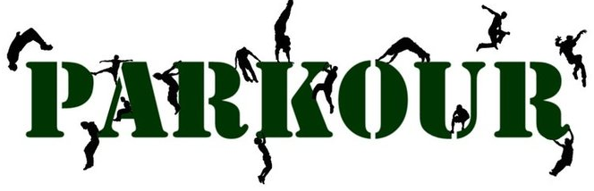
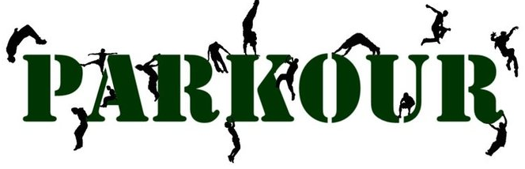

| Novedades | Parkour | Entrenamiento | Metodo Natural | Historiadel Parkour | ¿Que es APKADD? |
|---|
¿Que es el parkour?
El parkour (pronunciado en francés: [paʁkuʁ])
Es ante todo: una actividad física centrada en la capacidad motriz del individuo.
El parkour también es conocido como el arte del desplazamiento (ADD) o freerunning (FR) y es cada persona la que decide hasta qué punto involucrarse en su entrenamiento y cómo enfocarlo. Ahí podríamos distinguir entre distintos tipos de entrenamiento del propio movimiento dependiendo del objetivo de cada cual. Más centrado en el juego con los obstáculos, en la eficiencia, en la consecución de objetivos, etc. Es de esa forma que aun viniendo cada movimiento (pk/add/fr) de la misma raíz, estos matices han ido diferenciando cada una de ellas creando distintas corrientes del mismo arte centrado en el movimiento.
Muchas veces se tacha al parkour de una actividad peligrosa o extrema que reta al traceur, quien practica parkour, a empujar su capacidad hasta el límite. Sin embargo y lejos de lo que se pueda apreciar desde fuera, no es necesario el trepar por tejados, saltar distancias abismales o arriesgar en cada salto para practicar parkour. Una de las máximas del traceur es el estar seguro antes de cada reto planteado y prepararse concienzudamente para ello creando así un vínculo de equilibrio entre cuerpo y mente que le ayude a avanzar con paso firme.
Es por ello que esta actividad es apta para todo tipo de personas indistintamente de su edad, género, forma física o cualquier otro hándicap creado por la sociedad. Cada uno trabaja con su cuerpo, con sus posibilidades, y lleva su entrenamiento tan lejos como quiera llevarlo. Si te sientes mayor, el parkour puede ayudarte a rejuvenecer convirtiéndote en una persona más dinámica, ágil y devolviéndote la mirada de un niño que ve cualquier terreno como un patio de recreo. Si no estás en forma, el parkour puede ayudarte a estarlo y a mantener un entrenamiento físico constante y totalmente funcional.
A nivel de entrenamiento, cabe decir también, la condición física se convierte en algo vital para poder desarrollar y crecer en la disciplina. Es necesario un correcto acondicionamiento para proteger y preparar el cuerpo para los saltos y recepciones de todo tipo de movimientos. De esta forma también se pueden prevenir lesiones de cualquier tipo debido a las exigencias de la práctica continuada. Entonces, el practicante debe estar siempre en continua evolución y mejora de su estado de forma así como de su coordinación, flexibilidad, agilidad…
Al comienzo de la práctica es importante entrenar las técnicas desarrolladas intentando asimilarlas correctamente, momento en el cual se convertirán en un reflejo natural (gesto deportivo). La belleza de un movimiento consiste en que este sea puro, es decir, que no aparezca como algo artificial y buscado…
Como último punto destacar la filosofía y valores que entraña el ADD. El espíritu de superación, la hermandad y ayuda entre los practicantes, la humildad, el respeto y el coraje de seguir siempre hacia delante en la lucha por conseguir los objetivos personales tanto en el ámbito deportivo como en el personal, son los rasgos que hacen crecer cada día la práctica del add/parkour en todo el mundo.